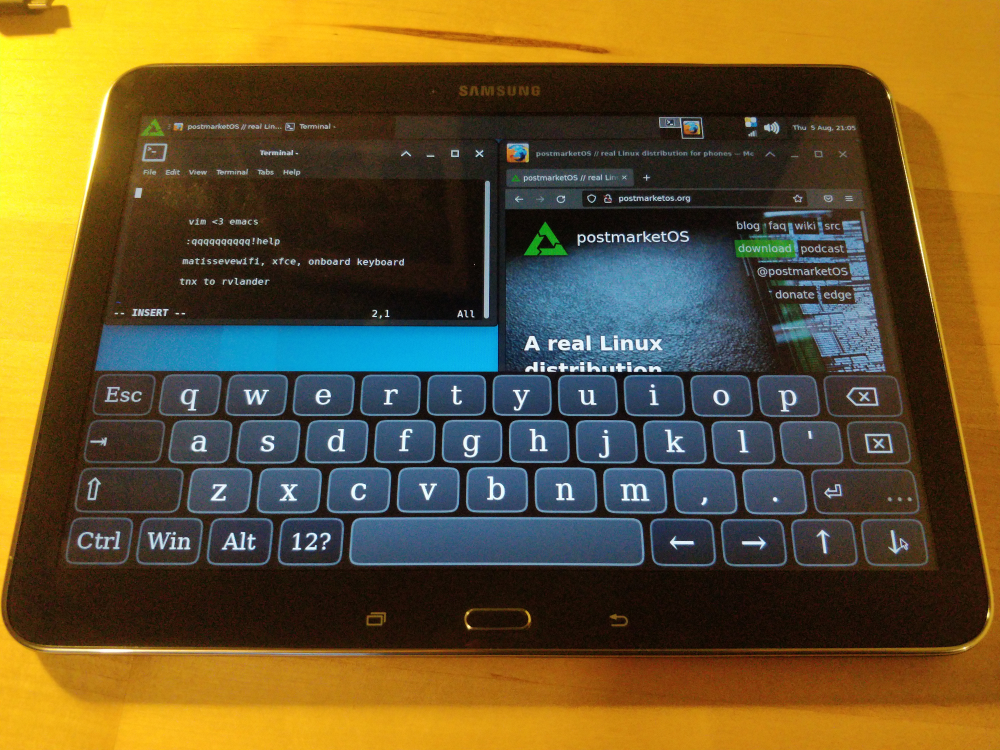

Samsung Galaxy Tab 4 10.1 2015 (samsung-matisseve)
|

Samsung Galaxy Tab 4 10.1 (WiFi) |
|
| Manufacturer | Samsung |
|---|---|
| Name | Galaxy Tab 4 10.1 (2015) |
| Codename | samsung-matisseve |
| Released | 2015 |
| Category | testing |
| Original software | Android 4.4.2 (KitKat) |
| postmarketOS kernel | Mainline |
| Hardware | |
| Chipset | Qualcomm APQ8016 Snapdragon 410 |
| CPU | 4 cores up to 1.2 GHz Cortex-A53 |
| GPU | Qualcomm Adreno 306 GPU |
| Display | 1280×800 px, 10.1" in (26 cm) diagonal, WXGA TFT display (LCM: smd_ltl101al06, touchscreen: atmel_mxt_1188s) |
| Storage | 16/32 GB flash memory, microSDXC slot (up to 64 GB) |
| Memory | 1.5 GB |
| Architecture | aarch64 |
{kind=link}
| USB Networking |
Works
|
|---|---|
| Flashing |
Works
|
| Touchscreen |
Works
|
| Display |
Works
|
| WiFi |
Works
|
| FDE |
|
| Mainline |
Works
|
| Battery |
|
| 3D Acceleration |
Works
|
| Audio |
Works
|
| Bluetooth |
Works
|
| Camera |
|
| GPS |
|
| Mobile data |
Unavailable
|
| SMS |
Unavailable
|
| Calls |
Unavailable
|
| USB OTG |
|
| NFC |
|
| Accelerometer |
Works
|
|---|---|
| Magnetometer |
|
| Ambient Light |
|
| Proximity |
|
| Hall Effect |
|
| Ir TX |
|
|---|---|
| TrustZone |
|
|
This device is based on
Snapdragon 410
.
See the SoC page for common tips, guides and troubleshooting steps |
Contents
Contributors
How to enter Odin flash mode
-
Hold
Power+Volume Down+Homewhile powering up the device. -
Press
Volume Upto enable flashing.
This device uses Odin. In order to be able to flash on it you need to install
heimdall
.
On ArchLinux this package in present in the repos.
The command to flash an image is:
1 heimdall flash --<partition_name> <your .img file>
Install
Fastboot
You need to install lk2nd boot loader on the device. See instructions here
To enter fastboot mode press
Power
+
Volume Down
until you see fastboot screen (device will reboot if already on).
When you have lk2nd installed and running, follow Qualcomm_Snapdragon_410/412_(MSM8916)#Installation .
Description
The device is based on the apq8016 variant of the msm8916 SoC that is beeing mainlined here . It means that it is in the process of being supported as is by the upstream Linux kernel.
Milestones
This presents the important steps that have been achieved toward mainlining this device:
- bootloader
- usb/network
- WiFi/BT
- device package
- Display
- buttons
- touchscreen
- sound (headphones)
- accelerometer
- sound (speaker)
TODO
- Screen: remove backlight hack
- Battery management
- GPS
- USB-OTG
- FDE: Device boots to black screen when FDE is enabled, can be pinged through USB-net
In case you want to come back to stock (original firmware)
-
Enter Odin flash mode (
Power+Volume Down+Home) - Use heimdall to download pit file
1 heimdall download-pit --output <your pit file>.pit
- unzip/untar your stock files
- flash stock using heimdall (you may need to adapt the command depending of the pit file)
1 heimdall flash --APNHLOS NON-HLOS.bin --ABOOT aboot.mbn --BOOT boot.img --HIDDEN hidden.img.ext4 --MODEM modem.bin --RECOVERY recovery.img --RPM rpm.mbn --SBL1 sbl1.mbn --SYSTEM system.img.ext4 --QSEE tz.mbn --CACHE cache.img.ext4
- after reboot Android may complain that partitions are corrupted, just clic on reinitialize data and it should be ok
Unbricking notes
Eloy bricked his tablet some years ago. Currently trying to recover with EDL.
Notes:
- The battery still charges, even with broken firmware.
- EDL cable (with shorting Data+ to GND) does not seem to work, maybe because (corrupted?) SPL is responsible for switching to EDL.
- There are some pads on the mainboard, but it is not known which are the EDL test points. See Huawei_Ascend_G7_(huawei-g7)#Preparation for files
See also
- downstream Kernel source
- mainlining guide for msm8916
- Mainlining Guide - postmarketOS intruduction videos to device tree for arm
- The Samsung_Galaxy_Tab_A_9.7_WiFi_(2015)_(samsung-gt510wifi) is very similar and as a port that is well advanced. It can be a source of inspiration.
- Device package